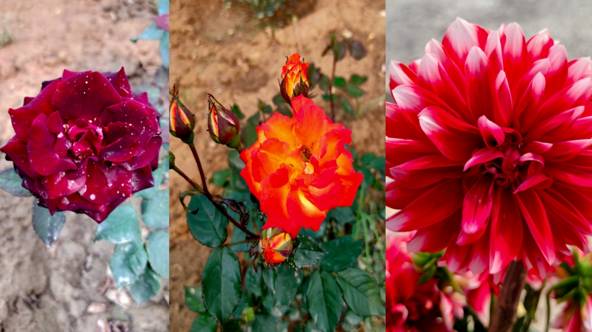
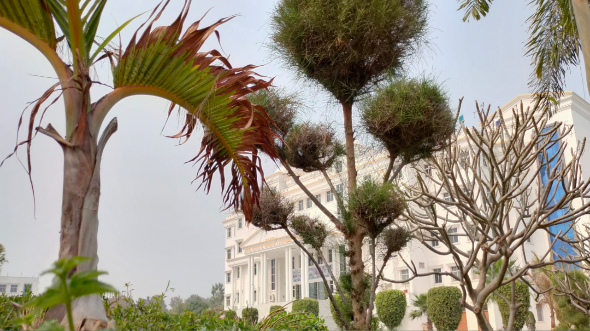
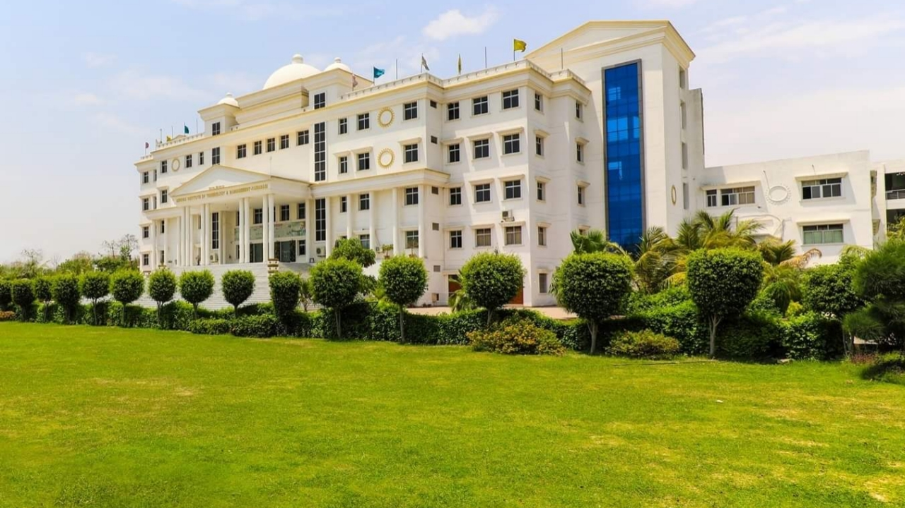

ASHOKA institute of technology and
management (Ashoka) came into
existence on February 22, 2010
located at heart of the holy city
Varanasi at the distance of 3.5 km
from the Varanasi Cantt Railway
Station and is also near to the
place of enlightenment of Lord
Buddha, Sarnath (Rishipattan) at
the distance of 1.5Km.



On the other hand it has the most
healthy and clean environment with
lots of Trees and Eco-friendly systems.
The various variety of trees and plants
make a healthy and sustainable
development study.
So, scroll down and have look for
efforts and system of Ashoka Institute
of Technology and Management in making
green and healthy nature.